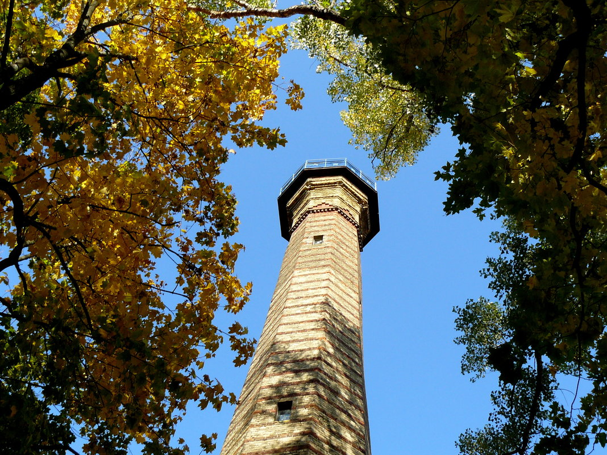
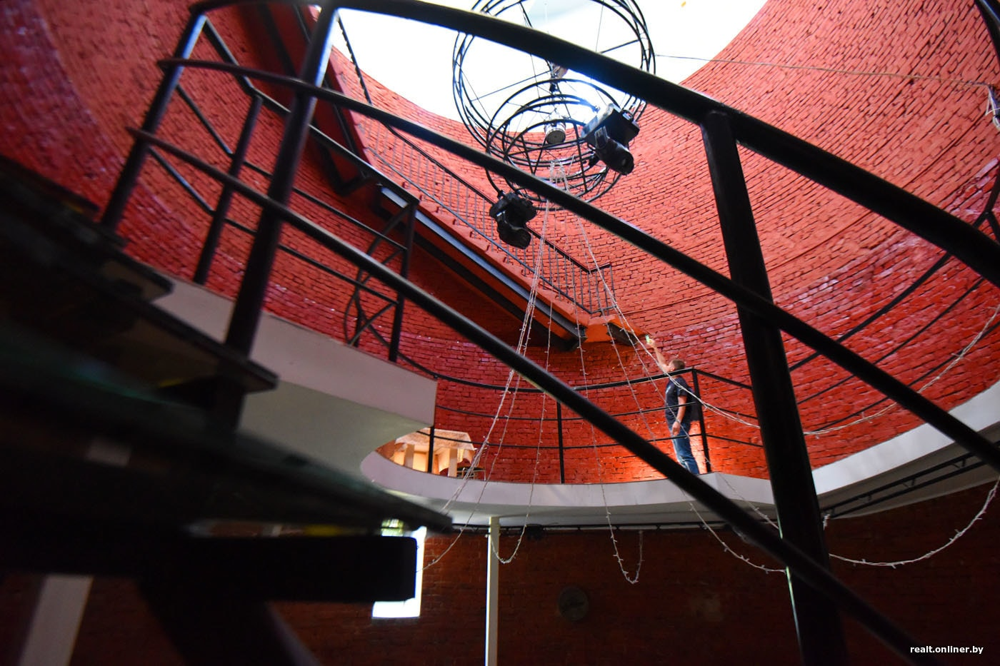

.
Башня обозрения


Башня обозрения в Гомеле – высокая кирпичная вытяжная труба, построенная в
первой половине XIX века на территории усадьбы Румянцевых-Паскевичей.
Первоначально имение принадлежало государственному деятелю и полководцу
Петру Румянцеву-Задунайскому, который хотел на этой территории построить
дворянское училище. Но свои планы осуществить не смог, и вскоре усадьба
перешла во владение графу Ивану Паскевичу. Иван Паскевич решил перестроить
здания под сахарный завод. Тогда же и появилась на берегу реки Сож
кирпичная башня, выполнявшая функцию для отвода продуктов горения и
создания тяги для топки. В начале 80-х годов XIX века здания сахарного
завода были отчасти переоборудованы, так как новый владелец усадьбы граф
Федор Паскевич решил перенести производство сахара в город Добруш. Таким
образом, старинные здания XIX века на территории усадьбы
Румянцевых-Паскевичей превратились объекты паркого назначения: в
производственном корпусе разместилась оранжерея «Зимний сад», а вытяжная
труба после реконструкции стала использоваться как башня обозрения. Во
время Великой Отечественной войны башня попала под сильный обстрел –
подойдя поближе, можно рассмотреть следы от пуль и осколков. В 2007 году
обзорная башня в Гомеле была закрыта на ремонт, поскольку лестничные
пролёты находились уже в аварийном состоянии. Во время реставрационных
работ была произведена замена металлических конструкций, укрепление и
ремонт элементов кирпичной кладки, оборудовано электроснабжение. 26 ноября
2015 года состоялось торжественное открытие обновленной башни обозрения, в
котором приняло участие руководство города и Гомельской области, а также
горожане. Вместе со смотровой площадкой и шпилем высота строения достигает
40 метров. Со смотровой площадки открывается великолепный вид парковую
зону, реку Сож и на прекрасный город.